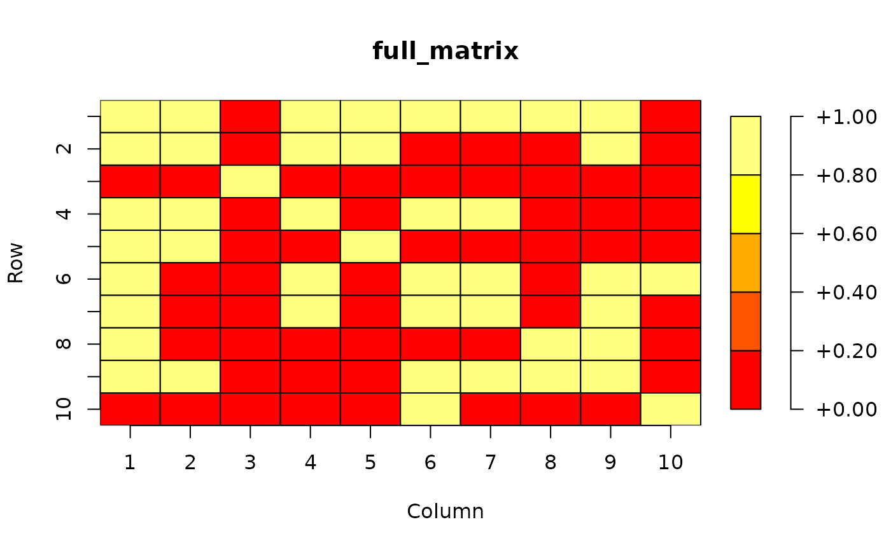
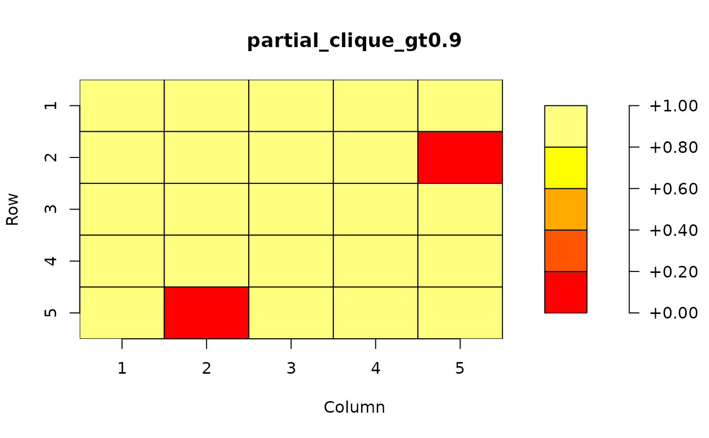

We use the run_example function to get a small demo for visualization:
library(UWBiost561)
example <- UWBiost561::run_example()
example
#> $adj_mat
#> [,1] [,2] [,3] [,4] [,5] [,6] [,7] [,8] [,9] [,10]
#> [1,] 1 1 0 1 1 1 1 1 1 0
#> [2,] 1 1 0 1 1 0 0 0 1 0
#> [3,] 0 0 1 0 0 0 0 0 0 0
#> [4,] 1 1 0 1 0 1 1 0 0 0
#> [5,] 1 1 0 0 1 0 0 0 0 0
#> [6,] 1 0 0 1 0 1 1 0 1 1
#> [7,] 1 0 0 1 0 1 1 0 1 0
#> [8,] 1 0 0 0 0 0 0 1 1 0
#> [9,] 1 1 0 0 0 1 1 1 1 0
#> [10,] 0 0 0 0 0 1 0 0 0 1
#>
#> $res
#> $res$clique_idx
#> [1] 1 4 6 7 9
#>
#> $res$edge_density
#> [1] 0.9to check if this is correct visually, we can plot the corresponding matrix:
library('plot.matrix')
par(mar=c(5.1, 4.1, 4.1, 4.1))
full_matrix <- example$adj_mat
plot(full_matrix)
partial_clique_gt0.9 <- full_matrix[example$res$clique_idx, example$res$clique_idx]
print(partial_clique_gt0.9)
#> [,1] [,2] [,3] [,4] [,5]
#> [1,] 1 1 1 1 1
#> [2,] 1 1 1 1 0
#> [3,] 1 1 1 1 1
#> [4,] 1 1 1 1 1
#> [5,] 1 0 1 1 1
plot(partial_clique_gt0.9)